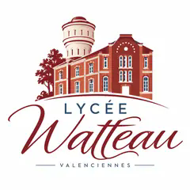

◉ ÉVÉNEMENT
Paris Games Week 2026
Vendredi 23 octobre · Paris Expo – Porte de Versailles.

LYCÉE WATTEAUVALENCIENNES // TERMINALE NSI// OPÉRATION PGW // NSI FIELD QUEST
EXPLORE · APPRENDS · RÉSOUS · PROGRESSE
Transforme ta visite en enquête d’informatique. Observe, questionne, compare et relie ce que tu vois aux notions de Terminale NSI.
ENTRER DANS LA MISSION6 NIVEAUX // 1350 XP À DÉBLOQUER
Paris Games Week 2026
Vendredi 23 octobre · Paris Expo – Porte de Versailles.
XP, badges et progression au fil des six missions. Les illustrations V8 seront ajoutées uniquement après validation du pipeline graphique.